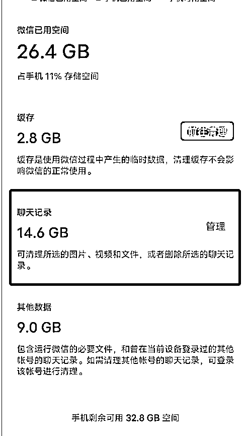
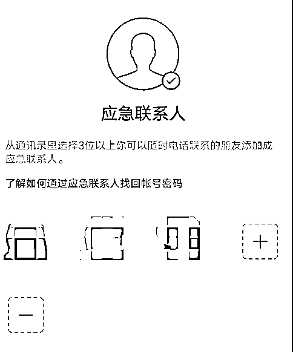

来源：https://dakhb269es.feishu.cn/docx/RIWqd7dg3oTe0OxstEacTLgAnff
各位圈友大家好，见贴欢喜，我是罗卜，非常感谢圈子提供的优质圈子，感谢我的老师@靠谱的耐心指导及给予的建议。
先简单介绍下自己，我是今年加入生财的小白，90后创业者，换过多个行业，一直在读书打卡社群、跑步圈、二手机初步实现变现，通过自学也做了一门竖屏导图课程，并跑通变现。
这篇私域营销100个小技巧，主要从三个方面介绍：
1.微信聊天
2.微信设置
3.微信朋友圈
基于此，个人也找了许多资料，也通过在生财往期精华帖学习，汇总了100个私域营销小技巧，很多时候我们并没有在意这个功能的出现，可以给我们带来哪些便利，是否可以用在私域营销中，让我们效率翻倍。期望这篇文章可以给大家做个参考。
说在最前面，微信是大家一直在使用的工具之一，有些人把它当聊天工具，有些人把它当营销工具，不同的人对微信都有不同的需求。
无论是聊天还是朋友圈，用好微信的相关功能，总能让你多一份惊喜。
工具不为我所用皆为浪费，如何用好工具那么需要仔细去研究，很多功能你知道，但你不知道如何去用，很多你知道怎么用，却没有把它用在恰当的地方。
那么罗卜近期整理了一些微信的功能，也可以说是比较全面，不一定都用的上，但可以让你快速了解一些功能的使用及可以用的场景。
方法1：点击右上角【+】号，【发起群聊】选择【面对面建群】→输入任意4个数字→【1人群建好】
方法2:点击【+】，【发起群聊】，邀请3个人，建群完毕，留下自己，其他人请出（他们不会知道，也不会提醒）
可以做哪些？
记录群：用来记录及收集不同的资料或信息
资料群：资料太多，放在一起太乱，把不同类型分类，分别分享到对应个人群。
群名：小红书资料、优质的文章、所思所想、每日复盘、某某资料、某某项目等。
也可把群都置顶，方便查找。
方法: 聊天界面长按一条对话/文件，即可看到[提醒]功能。
第1步：长按消息选择【提醒】
第2步：设置一个提醒时间【1小时后，具体某一天几点】
第3步：设置成功，到点会准时【微信提醒】。
可以看到“所有提醒也可以取消一些不必要的提醒。
哪些信息需要设置提醒：
1.明天要在上午10点打电话给张总。
2.周天中午12点要和朋友约饭，提前提前一点的时间。
3.重要的信息，纪念日，怕忘记的事情，上课提醒，直播分享等。
方法：长按消息选择【置顶】，可置顶多条信息
说明：把每天分享内容主题置顶，每个进群的人就能看到置顶信息，选择想要阅读的信息就可以，同时还会有个跟踪到置顶的信息，置顶信息不宜过多，也不能不置顶，
置顶信息建议：选择你认为需要给大家阅读的，重要的，有价值的信息
及时取消置顶：有些置顶信息过了时效，就要取消，不要一直留在置顶信息
方法：好友添加就，点击【标签】
【备注】方法：【早起-昵称-5月早起21天】【同事-昵称-负责哪个业务】【客户-昵称-对接哪个业务】
【标签】方法：【可爱的家人】【同窗的**】【不好惹的同事】【惹不起的甲方】
【描述】方法：对方的介绍、资料、图片等
做好好友备注，标签，描述，后续查找更方便。
群发一次只能是200人，那么每个标签就不要超过200人。【标签】方法参考【备注微信好友】
群发内容可发：文字、图片、语音，提前编辑好内容，然后进行群发，注意及时回复，在群发时设置回复可回复的内容，如领取福利【1】，继续了解【2】......
注意事项：群发后的信息自己是在聊天记录是看不到的，所以在群发是先做好备份。
方法：点击【我】，再点击【头像位置→】，设置【来电铃声】，点击【更换】，选择你喜好的铃声。
设置成功，来电铃声和朋友听见的彩铃都是这首歌了。
方法：长按别人发的视频，就能选择【静音播放】了。
再也不会有点开朋友发的视频🔕，大声播放出来的尴尬场面。
操作: 进入**群，点击右上角的【 ...】 ，选择 【消息免打扰]】，再选择【折叠该群聊】。

需要的时在「折叠的群聊」查找，也可以把不常阅读的群加入折叠，可一次性删除折叠群聊信息。
方法：打开好友聊天页面-长按文本框-点击边写边译，在输入文字时上方就会显示你要翻译的内容。
点击输入文字栏，就会弹出边写边译功能，还可以设置多种语言，方便沟通交流，可以选择简体中文、繁体中文、英文、日文、韩语，当翻译也很不错。
方法：只需要在左下角双击“微信”两下，就可以直接定位到最新未读消息的位置。
长语音有时候不太礼貌 (我自己看着长语音会很头疼) ，又不方便打字的时候，可以试试语音输入，支持普通话、粤语、英语。
有些输入法也会自带，很方便。
右键点击它，选择“引用”，多用于针对性的回复某个消息，在群聊人多的时候会比较好用.
微信自带的表情不够用，可以借助输入法的表情去使用
特效文字表情:
“么么哒”、“xoxo”会触发“亲亲”的表情雨“想你了”、
“miss u”会触发“星星”的表情雨。
“生日快乐”会触发“蛋糕雨”的表情雨。
点击好友头像→更多信息→我和她的共同群聊，对于已删除的群聊或找不到的群聊，不用小伙伴在群里冒泡也可以找到。
在群聊设置中我们需要注意点就是:消息免扰功能，开启后会生成2个选项，有助于我们更好的看群聊消息。
折叠该群聊:折叠群聊的消息不会在提醒，可在聊天列表下找到“折叠的群聊”。 (针对群聊人多聊天多的，将这些整合到一起，便于有时间统一观看)。
我是电脑互通的，所以经常会使用到“文件传输助手”，个人喜欢把它置顶，方便问价你传输。
在聊天对话框中长按2秒，选择【全屏输入】即可进入全屏输入界面，选择左上角【折叠】按钮，即可关闭全屏输入
这个提示仅在收到消息后的10秒钟内，在对话框输人文字才能看到，超过这个时间就看不到咯~
进入群菜单，查找聊天记录，点击【交易】，这里可以看到所有未领完的红包 @ 哦，超过24小时就不能领。
在【设置】里找到【储存空间】，找到【聊天记录】，选择要清理的【聊天记录】

把你觉得重要的群，除了把群【置顶】，还可以在【通讯录】找到【群聊】，前提你要把该群设置【保存通讯录】，设置好后，再也不用担心找不到群了。
依然是你觉得重要的群，又不想错过某个人在群里的信息，在群的右上角【...】，找到【关注的群成员】，关注后，该成员发消息会提醒你关注，不受到免打扰的影响，最多可关注4人。

找到某个群，点开【...】，找到【备注】，你可以备注任意你想编辑的文字，也可以给这些群增加统一的前缀。
写作群：写作-01-某某群，写作-02-某某群；其他的群也类似，主要是方便增加快速查找。
经常太忙，又懒得爬楼看群消息，那么可以在群聊，找到【查找聊天记录】，可根据不同的聊天内容搜索，按群成员，按日期等。
微信自带的表情有限，在【微信键盘】就补充了很多表情，添加也很方便。
在【微信键盘】，设置【单手模式】，亲测操作真的很方便。
就是这个群只解决一件事，不要什么都往这里说，聚焦，解决群友的问题。
很多人一时兴起，就把好友邀请进群，这个群也没有明确要做什么，即使明确了，也持续不了，那么这个群可以不用召集组建，如果自己不运营了，可以及时解散，不然下次你建群大家参与度就低了。
免费的很多人不珍惜，放弃的成本也低，付费是筛选，也是为了激励自己更好的去管理，去运营。要有一定的入群门槛。
朋友圈不一定能看到你的信息，但在群聊就能多次触达，可以群公告，群消息，消息置顶等，培养一批自己的粉丝，多一些利他。
无论是怎样的群，在建立前先明确好群规，一旦触碰，直接请出，也引导大家阅读群规，什么该做，什么不该做，事前说明叫专业，事后说明就是解释
方法：点击【我】，再点击头像位置处的【+状态】，可以添加状态中的任意一个，添加完成即可。
还可设置【话题、背景、位置、公开】等信息
其他：好玩的状态显示，不仅可以养鸡🐔，还可以养养别的小动物🐶，或者养养表情包。
第1步：在“我”里面，随便添加1个状态
第2步：在输入状态的地方选择添加表情
第3步：搜索一个“养鸡的表情
第4步：大功告成!状态上有只小鸡在跑咯
点击【个人信息】，找到【微信号】，点击【修改微信号】，通过密码验证登录去去设置。
注：一年只能改一次，确定好再更改。
第1步：在【我】一栏点击【收藏】,右上角【+】号
第2步：选三个横线的目录下，在选择【代办】
第3步：输入【待办事项】，已完成的可以自己【打勾】。点【...】还可以【在聊天中置顶】
第4步：置顶后可在主界面直接看到
可设置：清单计划、工作任务进度、副业项目计划等。
方法：在阅读文章的时候，点击右上角【...】，选择【浮窗】就设置成功，退出主界面后，在左上角【..】可找到已经设置好【浮窗】的内容。点进去就能继续阅读。
可设置的内容：看文章看到一半、经常要看的信息。
物品
方法：对着物品【扫一扫】，找到相似物品，多试扫了几种物品，会有官方账号、咨询、购物链接、价格等
随手扫一扫，作为了解物品信息的一个渠道。
方法：在“扫一扫”里面，选择“翻译”，拍一下照，就能直接翻译出来了。
自带的翻译神器，日常生活中的翻译问题，基本都可以搞定。
（参考设置备忘录）
操作:【我的】- 【收藏】 -右上角 【+】号
添加笔记：点击【收藏】，点击右上角【+】
添加语音：选择【录音】，点击【正在录音】便结束
语音转文字：选择【语音输入】 三种语言供你选择
添加图片：选择【照片】，选择需要的照片
文字编辑：直接编辑文字即可，可添加序号、分割线、代办事项等。
添加文件：选择【文件】各类文件都可添加
置顶与分享：点右上角【..】选择【聊天中置顶】，【置顶待办】
可设置：会议记录、活动策划、临时笔记、汇总等。
方法：(或发来)的图操作:，点击图片→长按微信中发出片，选择【提取文字】。
此次也可以用于【翻译】
操作:【我的】 →【收藏】 →右上角 【+】号 →选择添加 【图片】 →点击右上角 【··】导出为图片
备注：右下角「更换样式」还能设置「字体」「背景」
使用：平时可能用相册或软件制作，微信也是可以使用的。
方法：先在设置-通用-存储空间-缓存-清理一波然后再返回找到-照片视频文件和通话-关闭自动下载回头一看发现内存大了许多，而且再也不会乱自动下载了
方法：点击【我】，找到【服务】中的【钱包】，找到【支付设置】，【自动续费】，选择需要关闭的服务
关闭自动续费服务，再也不会莫名其妙的被自动扣费啦!
方法：找到【服务】→ 【医疗健康】 搜索【经期助手】 →【设置参数】 →【设置提醒】
其他也可以去探索哦
点击头像 【二维码名片】→【换个样式】→ 【保存】
编辑与重置： 右上角【...】→ 【图片编辑】→ 【重置二维码】
重置完了原来的二维码就不会生效
打开微信聊天窗口，点击右侧 【+】，长按【相册】按钮2秒即可启动系统自带的原相机，支持锁定对焦、变焦和调整曝光。这样拍出来的照片会更清晰。
当我们在开会或者是在外面不方便听语音时，这时我们可以长按对方发来的语音消息，选择【听筒播放】，这样我们就能像平时接电话一样，把手机放在耳边就可以听到语音啦
(仅苹果端短暂离开电脑懒得退出微信，或者下班忘记关微信，又担心被看到聊天记录，暴露隐私怎么办?
手机端聊天界面顶部一点击【Mac微信已登录】一未锁定，即远程锁定了电脑微信，再次点击即可 【解锁】
家里有老人的都帮ta们设置好这个功能，字体会变得更大，眼花的老人也不用担心看不清，还能选择【听文字消息】
我→设置→开启【关怀模式】，即可，页面更简洁，按钮也更突出长辈一眼就能看到自己想要的功能!
方法：搜索【微信支付】-【帮助中心】-【实名问题】-【查询名下账户】
查询绑定了几个账号，有陌生的账号可以及时清除，保障自己账号的安全
搜索【微信支付】，找到【支付服务】，点击【支付汇率查询】，这里就可以查询当天的汇率啦。
另外可以参与【支付有优惠】【一起做好事】【消费者保护等。
选择多个聊天内容汇总合并，点击【收藏】→打开【收藏 】→ 【转存为笔记】→转发（ 可复制）

设置-通用-聊天记录迁移与备份可迁移至电脑/平板/其他手机
微信聊天记录不舍得删掉，可以转移到新的电脑/ipad/新手机上，需要同一个WiFi或者热点
我→【设置】→【个人信息与权限】，就可以看到所有授权的应用啦!还可以取消授权!
微信点击我一【设置】一【隐私】一【授权管理】，就可以看到微信登录的应用，如果有不熟悉的应用，可直接移除，保护隐私不泄露。
如果不小心把微信好友删除了，但对方还没有删除你的话，就可以偷偷的加回对方好友，微信不会发送通知的，所以对方并不会知道。
打开微信→点击【我】→点击【设置】→点击【青少年模式】→【我已阅读并通知】，点击【开启→输入密码→输入你的信息】→点击【完成】
【青少年模式监护人】→点击【选择监护人】→选择你自己→点击【发送】，打开你的手机，点击刚收到的监护人邀请→点击【同意】，这样就设置完成
适用于家人，情侣等
在微信的设置中（设置-通用-照片、视频、文件和通话）新增了一个“聊天图片搜索”的功能，开启、后，在搜索聊天记录时，可用文字搜索图片内容。
当我们在发送好友申请的时候，微信会在下面出现一个【设为常用申请语】的功能。点击这个选项，在下次添加好友时就可以快速添加申请语了。
微信设置→切换账号→添加账号→注册新号→无卡创号
对于经常步数较多的人可以去使用，彼此点赞等，也可以设置运动封面图（参考朋友圈图），当你某天占领榜首，你可以看到（你在多少好友中...）
可以在这个页面，看看最近朋友们都在看哪些文章，如果觉得不错，你也可以去关注这篇文章，也能把文章分享给对方，“你也在看这个，我觉得...”
看到的一张图片，制作的一个好玩的图等，也想做成表情包经常分享，可以点击【我】，找到【表情】，右上角【...】，【添加的单个表情包】，找到【+】，找到你做好的图片
经常需要开发票，可以考虑在【我】，个人信息【我的发票抬头】/【我的地址】，设置好，方便随时使用。

找到【设置】，点击【个人信息与权限】，再点开【个人信息浏览和导出】，需要发送到电子邮箱。
点开对方朋友圈，找到【更多信息】，找到【我和她的共同群聊】，能够看到是否有，或者多个共同群；另外还能看到你和她是怎么添加的，查看【来源】，就可以看到了。
在【通讯录】里，找到【仅聊天的朋友】，不想让对方看到你朋友圈就点击【添加】，选择该好友；又想开放权限给对方，就点击【移除】。
在【我】的界面，找到【服务】，点开【收付款】，找到【向银行卡和手机号转账】，选择你需要的转账方法，方式，若还未设置好，可点击【手机号收款设置】。
在【我】的界面，找到【服务】，点开【收付款】，找到【二维码收款】，然后就看到【微信小账本】了。
这里可以设置小店的【语音提醒】【收款店员】【收款工具】【海边定制】【小店日记】【经营报表】等。
在【我】的界面，找到【服务】，点开【钱包】，找到【亲属卡】，意思就是对方消费，由你买单，可赠送长辈，子女，或其他亲人，金额由你来设置。
点开一个群，点击【+】号，找到【文件】，选择要分享的文件【聊天中的文件】【收藏中的文件】【手机储存】【手机相册】，找到文件点击分享。
首先得满足直播条件，实名认证，满18岁，点开人一个群，点击【+】号，找到【直播】，发起群直播，可设置对应群，就是分享到别的地方，其他人也加入不了。
就是你可以设置这个人或群，点击【某人】或【某群】，长按设置【不显示该聊天】，之后在聊天信息中看不到，但你可以通过搜索【某人】或【某群】找到。这个很友好，群消息太多，短期不想看就设置下，群聊信息依然在的。
在【个人信息】，【设置】里的【账号与安全】，找到【应急联系人】
主要为了及时找回账号和密码，有时操作不当，导致微信出现问题，那么这个应急联系人就可以帮你，可以是联系比较密切的人或者自己的小号，可以设置3位以上。

在【个人信息】，【设置】里的【账号与安全】，找到【微信安全中心】，遇到账号异常，无法登录等。可以找回账号与密码。解封账号。冻结账号。解冻账号等。
电脑端：找到【通讯录管理】，选择还未添加标签的好友，全选，再选择【添加标签】，自定义标签或添加到已有的标签中，【权限管理】也类似。
手机端：【通讯录】中找到【标签】，新建标签选择【从群里导入】，就是再这个群，且添加的好友，统一打标签；另外选择单个好友，找到对应的【标签】，点击完成即设置成功。
在【我】的一栏，找到【卡包】可添加
会员卡，公交卡，各类证件，优惠券和礼品卡（这个可能与城市有关）
找到【发现】，选择【附近 】
【附近的人】
既然可以设置【只看男生】或【只看女生】，还能看到对方的【朋友圈】和【视频号】信息，可以更精准的筛选需要添加的用户。
【同城直播】可以看到距离你多远的位置，也能看到正在直播的视频号。
【同城视频】可以找到更多同城的视频号及视频。参考【附近】
在【我】的找到【服务】

一起期待下
我→【设置】→【发现页管理】→【朋友圈设置】
如果你不想刷朋友圈了直接把朋友圈入口隐藏就好了想看的时候再放出来这个方法非常适合

需要排除干扰专心备考的朋友们!
我→【设置】→【发现页管理】→【视频号设置】
我→【设置】→【发现页管理】→【直播设置】
我→【设置】→【发现页管理】→【看一看设置】
我→【设置】→【发现页管理】→【搜一搜设置】
我→【设置】→【发现页管理】→【附近设置】
可以设置视频号视频、也可以设置一张精美的自我介绍，包含你的专业，项目等。
在每一次点赞留言多的朋友圈，偶尔在底下评论，分享下，因为点赞或留言的人还能看到你的评论。
在分享故事时，先预告几点会分享故事，然后在那个点分享；其次在故事的最顶端加上 #某某故事分享(1)，在当然的故事分享后续可加（2）、(3)，增加故事的连续性。也能引发看不同故事片段的人，看其他的内容。
每一条朋友圈，据说能看到的不足200人，也不是绝对的。许久不联系的人，你以为看不到对方的朋友圈，其实对方每天也在分享，只是你们太久没有互动，可以去点个赞，评论下，增加被看见的概率。
某个好友广告太频繁，又不想看，那么可以在朋友圈，点击对方的头像，设置【朋友权限】，可设置【聊天、朋友圈、微信运动等】、【仅聊天】，朋友圈和动态【不让她看我】，【不看她】
发朋友圈时，选择位置，点击右上角【搜索】，输入个性化地址【我最优秀】，显然是没有这个位置的，找到最下方提示【没有找到你的位置?】,点击创建位置，按要求输入对应的信息，不一定是真实的，有效即可。后续可直接搜索，在不同位置遇到这个情况，都可以重新创建。
就是你发一条朋友圈，想提醒某人看，那么就可以在【提醒谁看】这里选择，最多10人。
顾名思义就是这条朋友圈你可以选择哪些人可见，哪些人不可见；一般不设置就是所有人可见，也就是【公开】，如果只是想给自己做个记录可设置【仅自己可见】；还可以设置【部分可见】，就是这条朋友圈可以设置个人或某个标签的人可见；【不给谁看】与【部分可见】操作类似。
在最下方看到QQ【空间】的标识，点亮就是同步，不点亮就是不同步。
某条朋友圈突然发错了，或者不想给谁看，找到该条朋友圈，在右上角【...】，弹出【修改可见范围】，参考【朋友圈分组可见】。
1.有同一时间发多条，折叠后展示为一条，点开后可看见多条内容。
2.还有内容本身已被折叠了，也可能出现再次被折叠。
3.复制粘贴的内容被折腾概率高。
4.营销性质的内容也一样。
就是你发了一天朋友圈，可能被折叠了。
那么针对这些如何解：
1.第一句很关键，折叠后只能看到内容的一句，不易过长，可加表情，吸引用户点击。
2.发圈时间间隔不要太集中，可以隔一段时间，可测试。
3.用图片替代发圈，图片多样化，尝试不同风格。
4.也可尝试用谐音替代营销敏感字。
5.多与好友互动，增加友好度
还在内测中，部分用户可以使用，可以设置多条朋友圈置顶在朋友圈。
在你分享的内容中加入#罗卜Rob，可以是你的公众号，视频号，在朋友圈的一个特有标签，用户通过点击可以快速找到你推荐的内容。同样在朋友圈也适用。

在【发现】找到【小程序】，选择自己常用的小程序，添加到【我的小程序】.
建议收藏，后续发现新功能再补充。
码字不易，看到这里，给我点个赞吧。我是罗卜欢迎多多交流